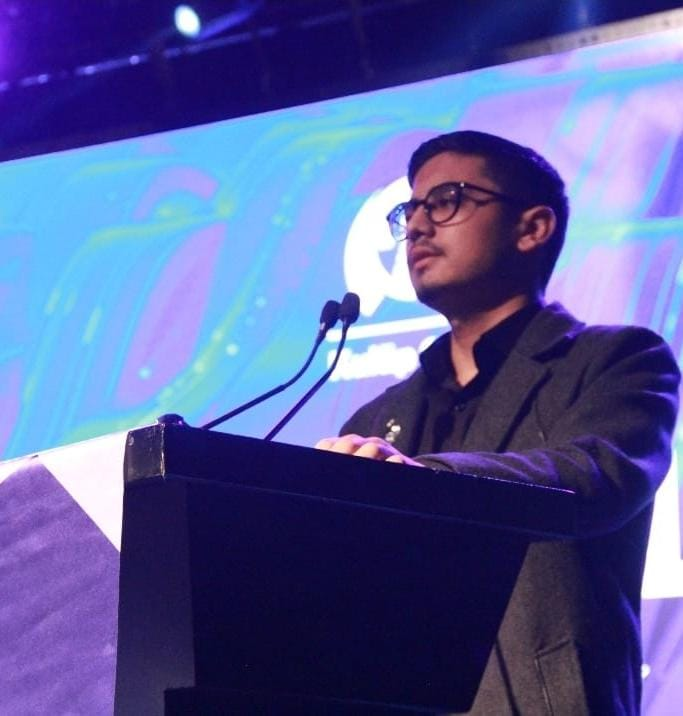

Timur “Karahan” Yalçınkaya
Eski adıyla: Umuthan Yalçınkaya
CEO, Teknik Yavuz Otomotiv Group | Kurucu & Başkan, Simurg Öğrenci Federasyonu
Mühendis • Araştırmacı • Eğitmen • Mentör • E-Sporcu
Hakkımda
İş Dünyası
Teknik Yavuz Otomotiv Group CEO’su olarak otomotiv, off-road ekipmanları ve motosiklet alanlarında faaliyet gösteren grup şirketlerini yönetiyorum.
Yurtdışı
Türkiye’yi ve Türk markalarını temsilen Canton Fuarı’ndayız
Çin’de düzenlenen Canton Fuarı’na Türkiye’yi ve Türk markalarını temsilen katıldık. Standımızda CAZA markası altında üç tekerlekli elektrikli ve benzinli modellerin yanı sıra çok sayıda farklı model sunduk.
Fuar; uluslararası alıcılarla doğrudan temas kurmamızı, Türk üretiminin kalitesini küresel pazarda göstermemizi ve yeni iş birlikleri geliştirmemizi sağladı.
Temsil
Türkiye ve Türk markaları adına uluslararası fuar katılımı.
Ürün Gamı
CAZA üç tekerlekli elektrikli ve benzinli modeller ile geniş model yelpazesi.
Hedef
Küresel dağıtım ağları ve uluslararası iş ortaklıkları.
Simurg Öğrenci Federasyonu
Simurg; mühendislik, teknoloji ve inovasyon alanlarındaki öğrenci takımlarını tek çatı altında toplayan, proje odaklı bir federasyondur. Yaklaşımımız tek sezonluk yarışma ekibi değil; sürdürülebilir Ar-Ge, standart eğitim, ortak altyapı ve kariyer desteğidir.
Her takım kendi kimliğini korur, ortak teknik birimler ve standartlar üzerinden aynı dili konuşur. Böylece bilgi kaybı azalır, yeni ekiplerin adaptasyonu hızlanır ve her sezon bir öncekinin üzerine inşa edilir. Rapor, test, kaynak planı, görev dağılımı, sürüm takibi ve kalite kontrol, federasyonun dokümantasyon kültürünün temelidir.
Simurg; öğrencinin teknik becerisinin yanında iletişim, liderlik, sunum ve proje yönetimi yetkinliklerini de geliştirmeyi hedefler.
Takımlar
Ortak eğitim ve dokümantasyon standardıyla büyüyen dokuz proje ekibi.
Eğitim
Deneyim
Ödüller ve Yarışmalar
Uzmanlık Alanları
Diller
Makale ve Yayınlar
Karadelikler ve Tekillik Teorisi
Einstein ve Hawking’in yaklaşımlarını hem eleştirel biçimde sorgulayan hem de aralarında bir bağ kuran özgün bir çalışma. Makale TÜBİTAK tarafından ödüllendirildi ve şu anda Uluslararası Bilim Konseyi sunumuna hazırlanıyor.
Lisans ve Sertifikalar
İletişim
Metal Off Road ve Çeki Demiri
1988’den beri Maslak Sanayi Sitesi’nde çeki demiri, römork sistemleri, off-road ekipmanları ve araç projeleri üzerine üretim yapan atölye.
Mentörlük, proje iş birlikleri, eğitim ve organizasyon çalışmaları için veya sadece tanışmak için ulaşabilirsiniz.